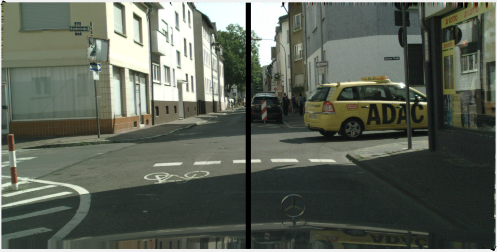
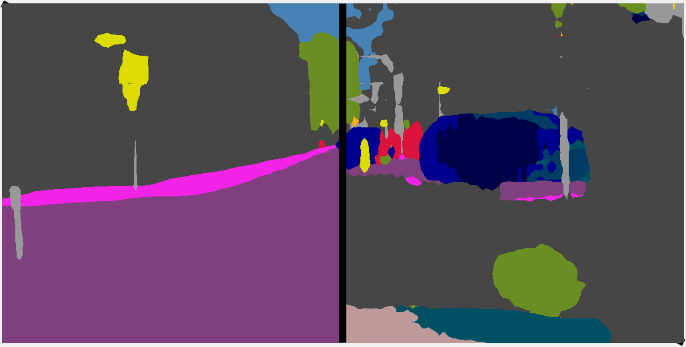
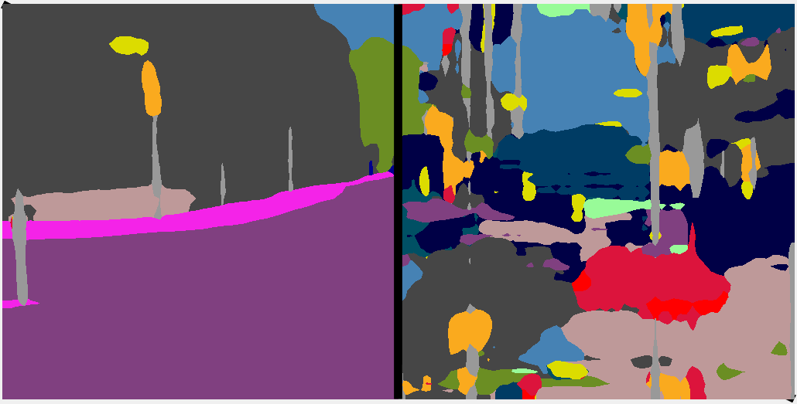
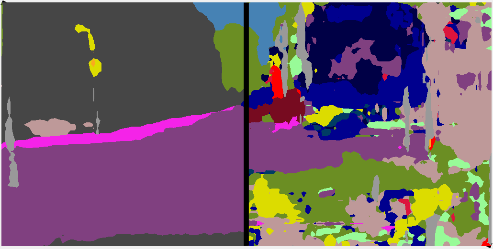
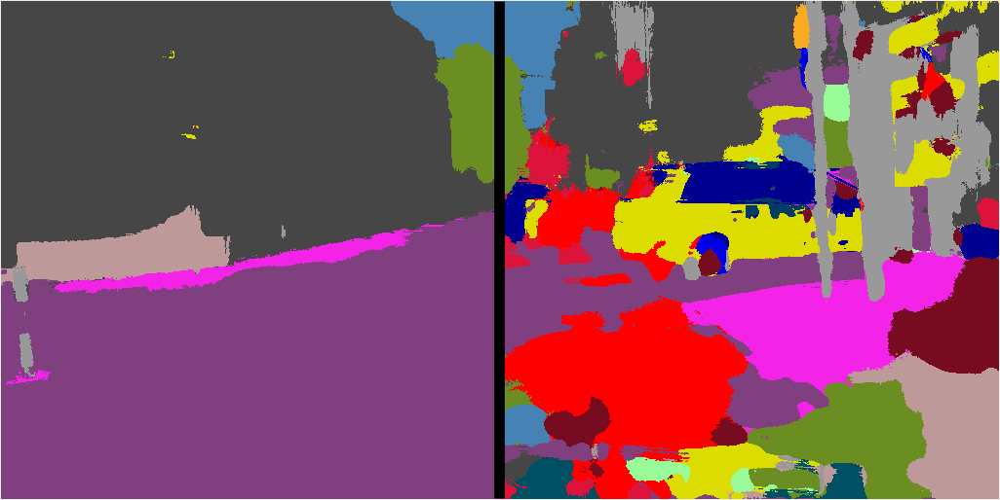

On the Robustness of Semantic Segmentation Models to Adversarial Attacks
Anurag Arnab,
Ondrej Miksik
and
Philip H.S. Torr

Input image (perturbed half on right)
 Ground truth
Ground truth

PSPNet

Dilated Net

ICNet

CRF as RNN
Abstract: Deep Neural Networks (DNNs) have been demonstrated to perform exceptionally well on most recognition tasks such as image classification and segmentation. However, they have also been shown to be vulnerable to adversarial examples. This phenomenon has recently attracted a lot of attention but it has not been extensively studied on multiple, large-scale datasets and complex tasks such as semantic segmentation which often require more specialised networks with additional components such as CRFs, dilated convolutions, skip-connections and multiscale processing.
In this paper, we present what to our knowledge is the first rigorous evaluation of adversarial attacks on modern semantic segmentation models, using two large-scale datasets. We analyse the effect of different network architectures, model capacity and multiscale processing, and show that many observations made on the task of classification do not always transfer to this more complex task. Furthermore, we show how mean-field inference in deep structured models and multiscale processing naturally implement recently proposed adversarial defenses. Our observations will aid future efforts in understanding and defending against adversarial examples. Moreover, in the shorter term, we show which segmentation models should currently be preferred in safety-critical applications due to their inherent robustness.